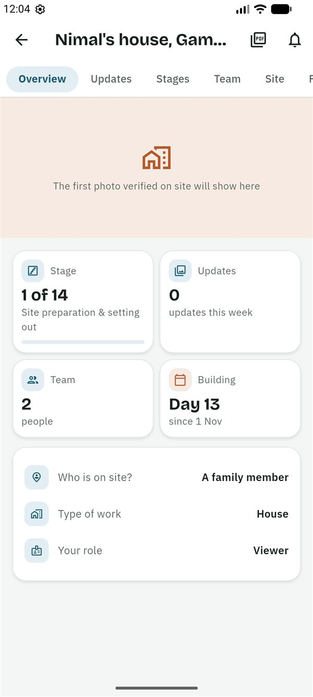
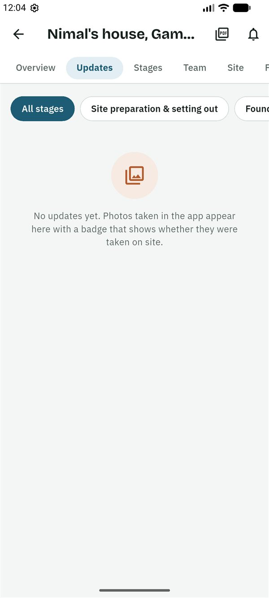
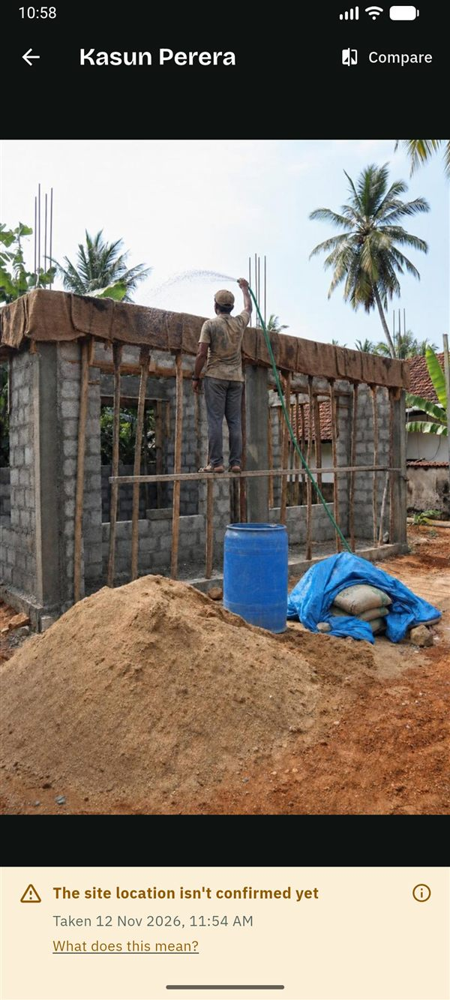

SiteProof
SiteProofGuides › Viewer
Guide for viewers
සිංහලෙන් කියවන්න (Read in Sinhala)
This guide is for a viewer: family who follow the progress of the house, such as a parent in the village or a relative abroad. You see the photos, the stages and the drawings. You never see money, and you only read along. SiteProof is free for you.
What you can and can't do
You can
- See every update and photo, with its badge, and play voice notes.
- See the stages, their dates and their stage checks.
- See the team, the site location and the drawings and documents (not the contract).
- Get a notification when an update is posted.
- Watch the time-lapse of your home rising.
You can't
- See money: there is no Money tab, and no budget, bills, payment requests or changes to the work.
- Comment or tap Seen 👍.
- Post updates, or start or finish stages.
- Add drawings, or invite people.
Getting started
- The owner invites you. You get a message, usually on WhatsApp, in Sinhala and English, with a 6-character code. The code works once, for 7 days.
- Install SiteProof from Google Play. While SiteProof is being tested, only invited testers can install it. It is for Android phones for now.
- Choose සිංහල or English, then read the short welcome or tap Skip.
- Sign in: type your email address and tap Send code, then type the 6-digit code from the email and tap Verify. Or tap Continue with Google. There is no password.
- Under About you, fill in Your name and the Country you live in, then tap Continue. If you like, first tap Add a photo at the top: Take a photo or Choose from your photos, move and zoom it so your face is in the circle, and tap Use photo. Only the people in your projects see it, and you can change or remove it later in Settings.
- On the home screen, tap the Join with a code button (or ⋮ → Join with a code). Type the code and tap Check the code. The app shows who invited you, as Viewer. Tap Join this project.
The project is on your home screen with a Viewer chip, under Following if you also have projects in other roles. It opens on the Overview.
Follow the build
The Overview
- At the top is the latest photo verified on site.
- The tiles show the Stage (for example "4 of 17"), the Updates this week, the Team and how long the house has been Building.
- Further down: Watch your home rise (a time-lapse, once photos have been lined up from the same spot), Latest photos, Site activity (a square for each day of the last 12 weeks) and Who's on site, with Call and WhatsApp buttons.

Updates and photos
- Open Updates. The newest update is first. Tap a stage chip to see only that stage, or All stages.
- Each photo has a badge: Verified on site, Warning or Flagged. Tap the badge, then What does this mean?, to see why.
- Tap a photo to see it full screen. Tap Compare to see it next to the earlier photo from the same spot, and drag the line between Then and Now.
- Some updates have a voice note: tap play to hear it. With Plus, it is also written out and translated into English or Sinhala, marked as written by AI.


Stages and drawings
- Stages shows the stages as a timeline: finished ones with a green tick, the current one ringed. Tap a stage for its dates, photos and stage check ("Signed off", or things to fix).
- Files has the drawings and documents, such as the approved building plan. You can open them but not comment.
- Team shows who is in the project and their role. Site shows the site's pin.
Notifications
You get a notification when someone posts an update. To get them once a day instead: on the home screen, tap ⋮ → Settings → Notification settings, and choose Once a day, at a time. The bell lists every notification, including ones you missed.
Want to say something?
Viewers can't comment in the app. Call or message the person on site from Who's on site on the Overview, or ask the owner to give you another role.
Good to know
Who sees what
- You never see money. The budget, bills and payments are for the owner, co-owners and the family member on site.
- Everyone in the team, you included, sees the photos, the site location, the stages and stage checks, the comments and the documents. Viewers don't see the contract.
- People in the project see your name and role, your photo if you added one, and your phone number if you signed in with one.
- The owner can make you the owner (for example to take over the project for a parent). You are told straight away.
The photo badges
- Verified on site: taken with the SiteProof camera inside the site's circle (usually 150 m), and uploaded soon after. The time comes from SiteProof's server, not from the phone.
- Warning: something couldn't be fully checked. For example the site location isn't confirmed yet, the GPS was weak, or the photo was taken a little outside the circle. There is often an honest reason.
- Flagged: taken far from the site, with a simulated location, or the same photo posted twice.
Photos can only be taken in the app, never picked from the gallery. A badge shows where and when, not the quality of the work.
Plans
SiteProof is free for you: only the owner pays. While SiteProof is being tested, every project has Plus free. Features marked (Plus) need the owner's Plus plan once plans start.